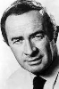

Also known as:Count Dracula and His Vampire Bride
Country:United States, 87 minutes
Spoken languages:English
Genres:Horror
Director(s):Alan Gibson
Writer(s):Don Houghton
Video Codec:Unknown
Number: 59


Certification:R
Storyline:
The police and British security forces call in Professor Van Helsing to help them investigate Satanic ritual which has been occurring in a large country house, and which has been attended by a government minister, an eminent scientist and secret service chief. The owner of the house is a mysterious property tycoon who is found to be behind a sinister plot involving a deadly plague. It is in fact Dracula who, sick of his interminable existence, has decided that he must end it all in the only possible way- by destroying every last potential victim.
Cast: 


Medium: Original DVD,
Comments: Part of: 100 Greatest Horror Classics
Loaned: No
Aspect ratio: Unknown